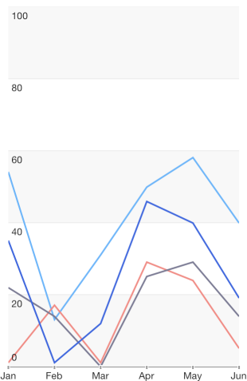
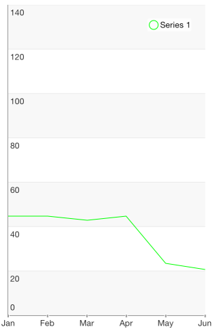

Chart Series: Line
TKChartLineSeries plot their data points on Cartesian Area. Points are connected with straight lines. Here is how to set up two line series:
Objective-C
NSMutableArray *expensesData = [[NSMutableArray alloc] init];
NSMutableArray *incomesData = [[NSMutableArray alloc] init];
NSMutableArray *profitData = [[NSMutableArray alloc] init];
NSArray *expensesValues = @[@60, @30, @50, @32, @31];
NSArray *incomesValues = @[@70, @75, @58, @59, @88];
NSArray *profitValues = @[@10, @45, @8, @27, @57];
NSArray *categories = @[@"Greetings", @"Perfecto", @"NearBy", @"Family Store", @"Fresh & Green"];
for (int i = 0; i < categories.count ; i++) {
[expensesData addObject:[TKChartDataPoint dataPointWithX:categories[i] Y:expensesValues[i]]];
[incomesData addObject:[TKChartDataPoint dataPointWithX:categories[i] Y:incomesValues[i]]];
[profitData addObject:[TKChartDataPoint dataPointWithX:categories[i] Y:profitValues[i]]];
}
TKChartLineSeries* seriesForExpenses = [[TKChartLineSeries alloc] initWithItems:expensesData];
seriesForExpenses.title = @"Expenses";
[chart addSeries:seriesForExpenses];
TKChartLineSeries* seriesForIncomes = [[TKChartLineSeries alloc] initWithItems:incomesData];
seriesForIncomes.title = @"Incomes";
[chart addSeries:seriesForIncomes];
TKChartLineSeries* seriesForProfit = [[TKChartLineSeries alloc] initWithItems:profitData];
seriesForProfit.title = @"Profit";
[chart addSeries:seriesForProfit];
chart.legend.hidden = NO;
Swift
var expensesData = [TKChartDataPoint]()
var incomesData = [TKChartDataPoint]()
var profitData = [TKChartDataPoint]()
let categories = ["Greetings", "Perfecto", "NearBy", "Family Store", "Fresh & Green" ];
let expensesValues = [60, 30, 50, 32, 31]
let incomesValues = [65, 75, 58, 59, 88]
let profitValues = [5, 45, 8, 27, 57]
for var i = 0; i < categories.count; ++i {
expensesData.append(TKChartDataPoint(x: categories[i], y: expensesValues[i]))
incomesData.append(TKChartDataPoint(x: categories[i], y: incomesValues[i]))
profitData.append(TKChartDataPoint(x: categories[i], y: profitValues[i]))
}
let seriesForExpenses = TKChartLineSeries(items: expensesData)
seriesForExpenses.title = "Expenses"
chart.addSeries(seriesForExpenses)
let seriesForIncomes = TKChartLineSeries(items: incomesData)
seriesForIncomes.title = "Incomes"
chart.addSeries(seriesForIncomes)
let seriesForProfit = TKChartLineSeries(items: profitData)
seriesForProfit.title = "Profit"
chart.addSeries(seriesForProfit)
chart.legend().hidden = false

Configure input and selection of line series
If you would like to configure the distance between finger touch and line to perform selection:
Objective-C
TKChartLineSeries *seriesForProfit = [[TKChartLineSeries alloc] initWithItems:profitData];
seriesForProfit.selectionMode = TKChartSeriesSelectionModeSeries;
seriesForProfit.marginForHitDetection = 30.f;
[chart addSeries:seriesForProfit];
Swift
let seriesForProfit = TKChartLineSeries(items: profitData)
seriesForProfit.selectionMode = TKChartSeriesSelectionMode.Series
seriesForProfit.marginForHitDetection = 30.0
chart.addSeries(seriesForProfit)
If you would like to change the series' stroke, you should use the following code snippet:
Objective-C
TKChartLineSeries *seriesForProfit = [[TKChartLineSeries alloc] initWithItems:profitData];
seriesForProfit.style.palette = [[TKChartPalette alloc] init];
TKChartPaletteItem *palleteItem = [[TKChartPaletteItem alloc] init];
palleteItem.stroke = [TKStroke strokeWithColor:[UIColor greenColor]];
[seriesForProfit.style.palette addPaletteItem:palleteItem];
[chart addSeries:seriesForProfit];
Swift
let seriesForProfit = TKChartLineSeries(items: profitData)
seriesForProfit.style.palette = TKChartPalette()
let paletteItem = TKChartPaletteItem()
paletteItem.stroke = TKStroke(color: UIColor.greenColor())
seriesForProfit.style.palette.addPaletteItem(paletteItem)
chart.addSeries(seriesForProfit)
